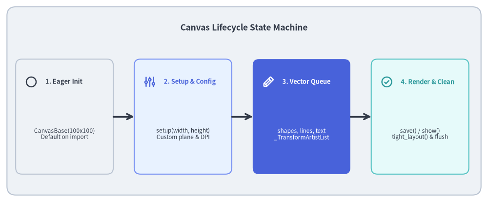
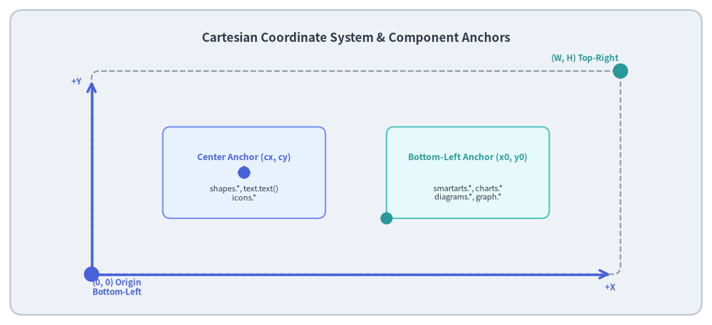
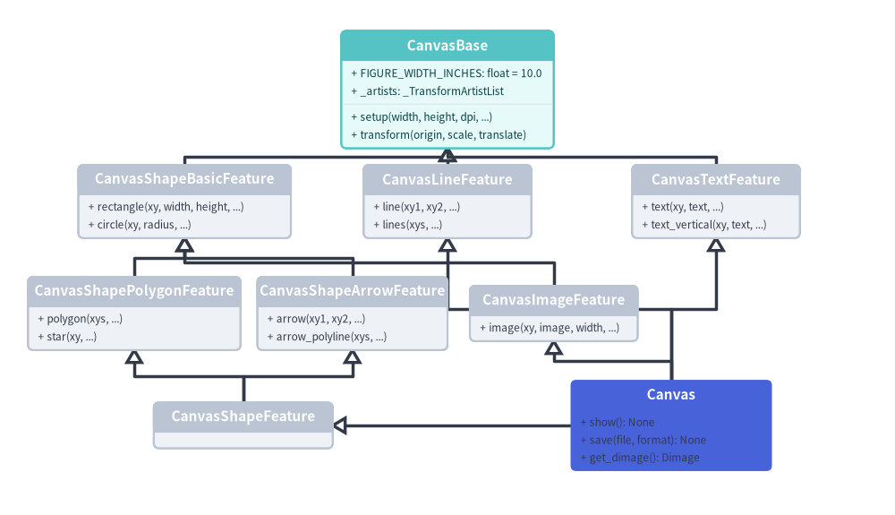

Canvas Lifecycle & Coordinate System
At the heart of Drawlib lies the Canvas Engine (_core/l4_canvas), which abstracts physical display devices and plotting libraries into a clean, deterministic virtual coordinate plane.
This document details the Cartesian virtual geometry model, anchor point conventions, and the Canvas lifecycle state machine.

Source Code
from drawlib.canvas import save, setup
from drawlib.icons import phosphor
from drawlib.lines import line
from drawlib.shapes import rectangle
from drawlib.styles import Styles
from drawlib.text import text
setup(width=140, height=58)
rectangle((70, 29), width=136, height=54, style=Styles.Neutral.patch(shape_r=2.5))
text(
(70, 50),
"Canvas Lifecycle State Machine",
style=Styles.DarkBold.patch(text_size=12.5),
)
states = [
(18.5, "1. Eager Init", "CanvasBase(100x100)\nDefault on import", Styles.Neutral, Styles.DarkBold, phosphor.circle),
(52.5, "2. Setup & Config", "setup(width, height)\nCustom plane & DPI", Styles.PrimaryNeutral, Styles.PrimaryBold, phosphor.sliders),
(86.5, "3. Vector Queue", "shapes, lines, text\n_TransformArtistList", Styles.PrimaryFlat, Styles.WhiteBold, phosphor.pencil),
(120.5, "4. Render & Clean", "save() / show()\ntight_layout() & flush", Styles.SecondaryNeutral, Styles.SecondaryBold, phosphor.check_circle),
]
for x, title, desc, card_style, text_style, icon_func in states:
rectangle((x, 24.5), width=28, height=33, style=card_style.patch(shape_r=1.8))
icon_func((x - 9.5, 34.5), width=3.6, style=text_style)
text((x - 5.5, 34.5), title, style=text_style.patch(halign="left", text_size=9.2))
sub_style = Styles.White if card_style == Styles.PrimaryFlat else Styles.Dark
text((x, 19.5), desc, style=sub_style.patch(text_size=8.5))
for i in range(3):
x_from = states[i][0] + 14.0
x_to = states[i + 1][0] - 14.0
line((x_from, 24.5), (x_to, 24.5), arrow_head="->", style=Styles.DarkBold)
save()
1. Concept: Cartesian Virtual Space vs. Screen Coordinates
Most graphics and GUI engines (HTML5 Canvas, SVG, PIL, OpenCV) place the coordinate origin (0, 0) at the top-left corner, with the Y-axis pointing downward (+Y down).
While natural for cascading web layouts, this convention is counter-intuitive for humans and mathematical reasoning:
- Ground/baseline objects have high Y coordinates, while headers have low Y coordinates.
- Trigonometric rotations (clockwise vs. counter-clockwise) require inverted angle calculations.
- Bar charts, line graphs, and hierarchy trees must invert vertical bounds manually.
The Drawlib Solution: Pure Cartesian Plane
Drawlib uses a standard Cartesian coordinate system:
- Origin
(0, 0)is anchored at the bottom-left corner. +Xextends horizontally to the right (0→W).+Yextends vertically upward (0→H).- Rotations are standard counter-clockwise angles ($0^\circ$ points East, $90^\circ$ points North).

Source Code
from drawlib.canvas import save, setup
from drawlib.icons import phosphor
from drawlib.lines import line
from drawlib.shapes import circle, rectangle
from drawlib.styles import Styles
from drawlib.text import text
setup(width=140, height=64)
rectangle((70, 32), width=136, height=60, style=Styles.Neutral.patch(shape_r=2.5))
text(
(70, 56.5),
"Cartesian Coordinate System & Component Anchors",
style=Styles.DarkBold.patch(text_size=12.2),
)
# Simulated Canvas Boundary (X: 18 to 122, Y: 10 to 50)
rectangle((70, 30), width=104, height=40, style=Styles.MutedDashed.patch(shape_r=1.5))
# Origin (0,0) at bottom-left
circle((18, 10), radius=1.5, style=Styles.PrimaryFlat)
text((23, 7.5), "(0, 0) Origin\nBottom-Left", style=Styles.PrimaryBold.patch(text_size=8.5))
# Top-Right (W, H)
circle((122, 50), radius=1.5, style=Styles.SecondaryFlat)
text((115, 52.5), "(W, H) Top-Right", style=Styles.SecondaryBold.patch(text_size=8.5))
# Primitive: Center Anchor (cx, cy)
rectangle((48, 30), width=32, height=18, style=Styles.PrimaryNeutral.patch(shape_r=1.5))
circle((48, 30), radius=1.2, style=Styles.PrimaryFlat)
phosphor.crosshair((48, 30), width=2.8, style=Styles.PrimaryBold)
text((48, 33), "Center Anchor (cx, cy)", style=Styles.PrimaryBold.patch(text_size=8.8))
text((48, 26), "shapes.*, text.text()\nicons.*", style=Styles.Dark.patch(text_size=8.0))
# Component: Bottom-Left Anchor (x0, y0)
rectangle((92, 30), width=32, height=18, style=Styles.SecondaryNeutral.patch(shape_r=1.5))
circle((76, 21), radius=1.2, style=Styles.SecondaryFlat)
phosphor.arrow_up_right((76, 21), width=2.8, style=Styles.SecondaryBold)
text((92, 33), "Bottom-Left Anchor (x0, y0)", style=Styles.SecondaryBold.patch(text_size=8.8))
text((92, 26), "smartarts.*, charts.*\ndiagrams.*, graph.*", style=Styles.Dark.patch(text_size=8.0))
# Axes indicators
line((18, 10), (18, 48), arrow_head="->", style=Styles.PrimaryBold)
text((15, 48), "+Y", style=Styles.PrimaryBold.patch(text_size=8.8))
line((18, 10), (120, 10), arrow_head="->", style=Styles.PrimaryBold)
text((120, 7.5), "+X", style=Styles.PrimaryBold.patch(text_size=8.8))
save()
2. Positioning: The Dual-Anchor Architecture
A key architectural design in Drawlib is the clean separation of anchor semantics between low-level primitives and high-level components:
| Category | Typical Modules | Anchor Point | Mathematical Definition |
|---|---|---|---|
| Primitives | shapes.*, text.text(), icons.* |
Center (cx, cy) |
Position specifies the exact geometric centroid of the shape, glyph, or icon. |
| Components | smartarts.*, charts.*, diagrams.*, graph.* |
Bottom-Left (x0, y0) |
Position specifies the minimum bounding corner of the enclosing box [x0, x0 + width] × [y0, y0 + height]. |
Why This Dual-Anchor Design?
- Primitives Are Symmetry-Centric: Rotating a box or placing a label on an arrow is simplest when coordinates specify the shape's center
(cx, cy). - Components Are Container-Centric: Stacking tables, aligning bar charts, or positioning DAG clusters is simplest when defining the enclosing bounding box from its bottom-left origin
(x0, y0). - To center a component with width $w$ horizontally on a canvas of width $W$, simply compute: $$x_0 = \frac{W - w}{2}$$
3. Details: Canvas Engine Architecture & Multiple Inheritance
3.1. Cooperative Diamond Inheritance Hierarchy
The terminal Canvas class (_core/l4_canvas/canvas.py) does not implement all drawing operations directly. Instead, it is composed via Python multiple inheritance across seven feature mixin classes rooted in CanvasBase:

Source Code
from drawlib.canvas import save, setup
from drawlib.diagrams.class_diagram import ClassDiagram, ClassNode
from drawlib.styles import Styles
setup(width=160, height=92)
cd = ClassDiagram(
node_style=Styles.Neutral,
edge_style=Styles.DarkBold,
edge_text_style=Styles.Dark,
title="L4 Canvas Cooperative Diamond Inheritance Hierarchy",
)
# Base class
base = cd.add(ClassNode(name="CanvasBase", width=38.0, style=Styles.SecondaryNeutral), xy=(80.0, 76.0))
base.add_attribute("FIGURE_WIDTH_INCHES: float = 10.0")
base.add_attribute("_artists: _TransformArtistList")
base.add_method("setup", params="width, height, dpi, ...")
base.add_method("transform", params="origin, scale, translate")
# Intermediate feature mixins (Row 2)
shape_basic = cd.add(ClassNode(name="CanvasShapeBasicFeature", width=38.0), xy=(33.0, 56.0))
shape_basic.add_method("rectangle", params="xy, width, height, ...")
shape_basic.add_method("circle", params="xy, radius, ...")
line_feat = cd.add(ClassNode(name="CanvasLineFeature", width=30.0), xy=(80.0, 56.0))
line_feat.add_method("line", params="xy1, xy2, ...")
line_feat.add_method("lines", params="xys, ...")
text_feat = cd.add(ClassNode(name="CanvasTextFeature", width=30.0), xy=(128.0, 56.0))
text_feat.add_method("text", params="xy, text, ...")
text_feat.add_method("text_vertical", params="xy, text, ...")
# Specialized feature mixins (Row 3)
shape_poly = cd.add(ClassNode(name="CanvasShapePolygonFeature", width=38.0), xy=(24.0, 36.0))
shape_poly.add_method("polygon", params="xys, ...")
shape_poly.add_method("star", params="xy, ...")
shape_arrow = cd.add(ClassNode(name="CanvasShapeArrowFeature", width=34.0), xy=(63.0, 36.0))
shape_arrow.add_method("arrow", params="xy1, xy2, ...")
shape_arrow.add_method("arrow_polyline", params="xys, ...")
image_feat = cd.add(ClassNode(name="CanvasImageFeature", width=30.0), xy=(99.0, 36.0))
image_feat.add_method("image", params="xy, image, width, ...")
# Aggregate & Terminal (Row 4)
shape_feat = cd.add(ClassNode(name="CanvasShapeFeature", width=32.0), xy=(43.5, 16.0))
canvas_cls = cd.add(ClassNode(name="Canvas", width=36.0, style=Styles.PrimaryFlat), xy=(120.0, 16.0))
canvas_cls.add_method("show", return_type="None")
canvas_cls.add_method("save", params="file, format", return_type="None")
canvas_cls.add_method("get_dimage", return_type="Dimage")
# Inheritance connections
cd.connect(shape_basic, base, "inheritance", start_side="top", end_side="bottom")
cd.connect(line_feat, base, "inheritance", start_side="top", end_side="bottom")
cd.connect(text_feat, base, "inheritance", start_side="top", end_side="bottom")
cd.connect(shape_poly, shape_basic, "inheritance", start_side="top", end_side="bottom")
cd.connect(shape_arrow, shape_basic, "inheritance", start_side="top", end_side="bottom")
cd.connect(image_feat, shape_basic, "inheritance", start_side="top", end_side="bottom")
cd.connect(shape_feat, shape_poly, "inheritance", start_side="top", end_side="bottom")
cd.connect(shape_feat, shape_arrow, "inheritance", start_side="top", end_side="bottom")
cd.connect(canvas_cls, shape_feat, "inheritance", start_side="left", end_side="right")
cd.connect(canvas_cls, line_feat, "inheritance", start_side="top", end_side="bottom")
cd.connect(canvas_cls, text_feat, "inheritance", start_side="top", end_side="bottom")
cd.connect(canvas_cls, image_feat, "inheritance", start_side="top", end_side="bottom")
cd.draw(xy=(0.0, 0.0))
save()
3.2. Physical Unit & 720pt Typography Mapping
Rather than dynamically scaling physical dimensions based on arbitrary scale factors, Drawlib anchors every canvas to a fixed 10.0-inch width (FIGURE_WIDTH_INCHES = 10.0 in CanvasBase).
- Physical Width: Exactly 10.0 inches across the horizontal coordinate span (
[0, width]). - Physical Height: Proportional to the aspect ratio: $$\text{fig_height} = \text{height} \times \frac{10.0}{\text{width}}$$
- Typographic Scale Invariant: Because 1 inch is exactly 72 PostScript points, the canvas width represents precisely 720 points ($10.0 \times 72 = 720\text{ pt}$). Consequently, the rendered font size in points is:
$$\text{Rendered Font Size (pt)} = \text{text_size} \times \frac{720.0}{\text{Canvas Width}}$$
When a diagram is displayed at standard documentation column widths, an in-canvas
text_size=10.5–12.0matches standard $16\text{px}$ HTML body text.
3.3. Spatial Transformations & Transform Stack
Domain modules (such as _charts and _diagrams) frequently require local coordinate frames. Instead of manually recomputing every coordinate:
CanvasBase.transform(origin, scale, translate)provides a context manager that pushes an affine similarity transform onto_transform_stack._TransformArtistList: A specialized list subclass holding pending Matplotlib artists. When artists are added via.append()or.extend(), the list intercepts them and scales patch coordinates, line widths, text font sizes, and bounding boxes in-place.- Upon exiting the
with canvas.transform(...)context, the previous transformation state is popped from the stack cleanly.
3.4. Eager Initialization & Canvas Lifecycle
- Zero "Uninitialized" State:
CanvasBase.__init__()eagerly callsself.setup(), defaulting to a $100 \times 100$ coordinate plane. Standalone scripts can call drawing primitives immediately without an explicitsetup()call. - Rendering & Artist Flushing: When
canvas.save()orcanvas.show()is invoked:- Artists in
_artistsare added to the MatplotlibAxeswith ascendingzorder. - Canvas margins are eliminated via
tight_layout()andsubplots_adjust(left=0, right=1, bottom=0, top=1). - The image is rendered to disk or memory.
- All artists are removed from the
Axesvia_remove_artists_from_ax(), leaving the canvas ready for subsequent frames or animations without memory leaks.
- Artists in
Next, explore the type safety and styling system in Types & Style Models.